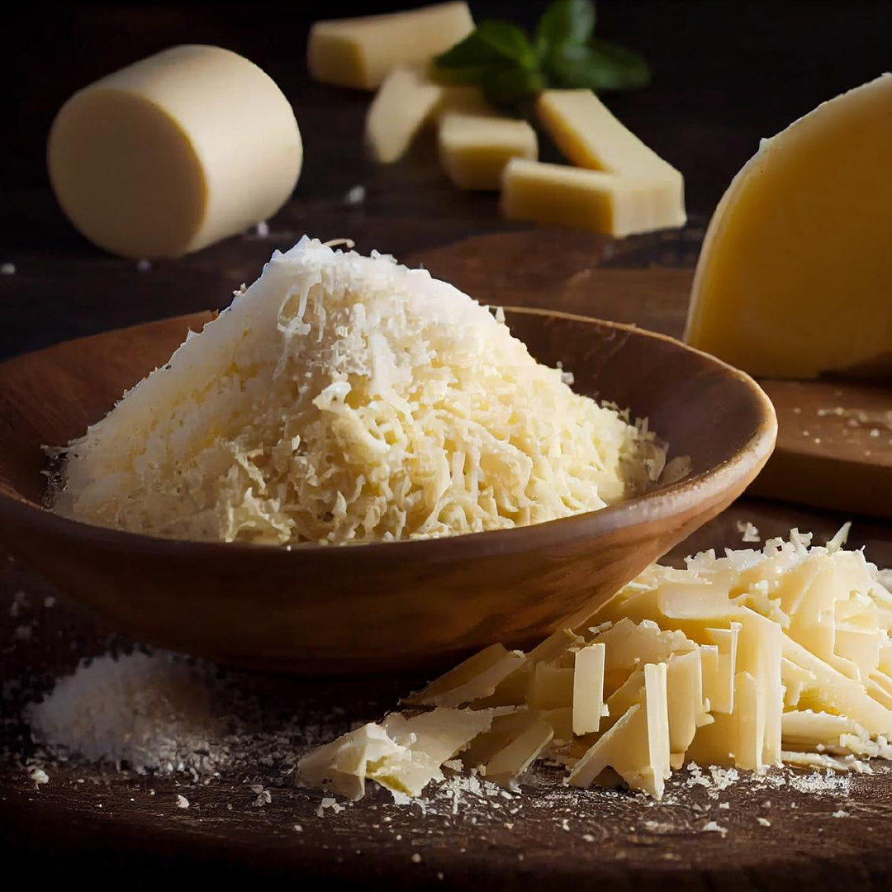

O Parmesão é um queijo duro e granuloso originário da Itália, famoso por seu sabor intenso e aroma característico. É frequentemente utilizado em pratos italianos como massas, risotos e gratinados.
O queijo Parmesão é conhecido por sua longa maturação, que pode durar de 1 a 3 anos ou mais. Durante esse período, ele desenvolve seu sabor complexo e textura granulosa, ideal para ralar e polvilhar sobre pratos finalizados.
Seu processo de fabricação envolve o uso de leite de vaca, coagulação, formação da coalhada, prensagem e salga. Após a prensagem, o queijo é envelhecido em condições controladas para alcançar sua qualidade e sabor desejados.
Experimente o Parmesão em diferentes pratos para descobrir sua versatilidade e contribuição única para a culinária italiana tradicional.